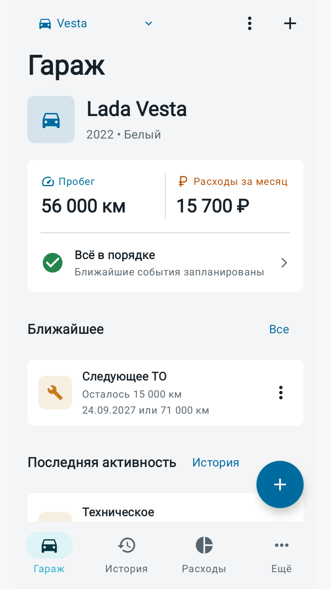

Автомобиль под контролем
Едем дальше
Учёт расходов и обслуживания авто
Записывайте заправки, обслуживание и пробег. Напоминания помогут не пропустить важное ТО.
Скачать в RuStoreAndroid 8.0 и новее · Версия для iPhone готовится

Возможности приложения
Расходы
Записывайте заправки, обслуживание, ремонт и другие траты.
Пробег
Обновляйте показания одометра вручную, когда вам удобно.
Напоминания
Следите за ТО и другими событиями по дате или пробегу.
Помощь и ответы
Что-то не работает или есть идея для приложения? Напишите автору.
edemdalshe.app@yandex.com Написать на почтуЧастые вопросы
На каких устройствах работает приложение?
Приложение для устройств с Android 8.0 и новее доступно в RuStore.
Версия «Едем дальше» для iPhone готовится к релизу. Дата публикации пока не объявлена.
Как перенести данные на новый iPhone?
В текущей версии нет автоматической синхронизации. После простой установки на новый телефон старые записи не появятся.
- На старом iPhone откройте «Ещё» и трижды нажмите на версию приложения.
- Создайте резервную копию и сохраните файл вне приложения, например в iCloud Drive через «Файлы».
- На новом iPhone откройте то же меню и восстановите данные из файла.
Восстановление заменяет текущие данные. Сначала сохраните отдельную копию записей нового телефона, если они нужны. Не удаляйте исходный файл до проверки переноса.
Как перенести данные на новый Android-телефон?
В приложении пока нет аккаунта, облачной синхронизации или ручного экспорта данных на Android.
Android может восстановить данные через системную резервную копию или перенос между устройствами, если эта функция включена. Результат зависит от версии Android, производителя телефона и настроек резервного копирования, поэтому автоматическое восстановление не гарантируется.
Не удаляйте приложение со старого телефона, пока не проверите данные на новом.
Почему не пришло уведомление?
Проверьте разрешение на уведомления для «Едем дальше» в настройках iPhone или Android, а также режим фокусирования или «Не беспокоить». На Android дополнительно проверьте ограничения фоновой работы и экономии заряда для приложения.
Уведомление по дате планируется на 09:00. Если это время уже прошло, оно не переносится автоматически на следующий день.
Как работает напоминание по пробегу?
Приложение сравнивает порог напоминания с последним внесённым пробегом. Если наступила дата или достигнут пробег, напоминание становится актуальным внутри приложения.
Пробег нужно обновлять вручную: приложение не считывает одометр и не отправляет отдельное системное уведомление при достижении порога.
Что указать в сообщении об ошибке?
Опишите, что произошло и какие действия к этому привели. Укажите модель устройства, версию iOS или Android и версию приложения из раздела «Ещё».
Можно приложить скриншот. Предварительно закройте госномер, VIN и другую личную информацию. Пароли и коды подтверждения не нужны.
Где хранятся мои записи?
Записи об автомобилях хранятся локально на вашем устройстве. Автор не получает их автоматически. Экспортированные копии хранятся там, куда вы их сохранили.
Подробнее об обработке данных и обращений: политика конфиденциальности.